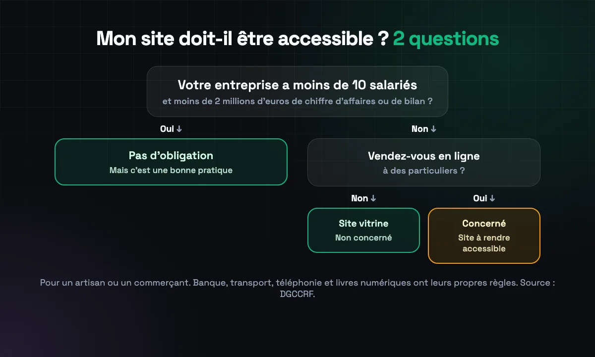
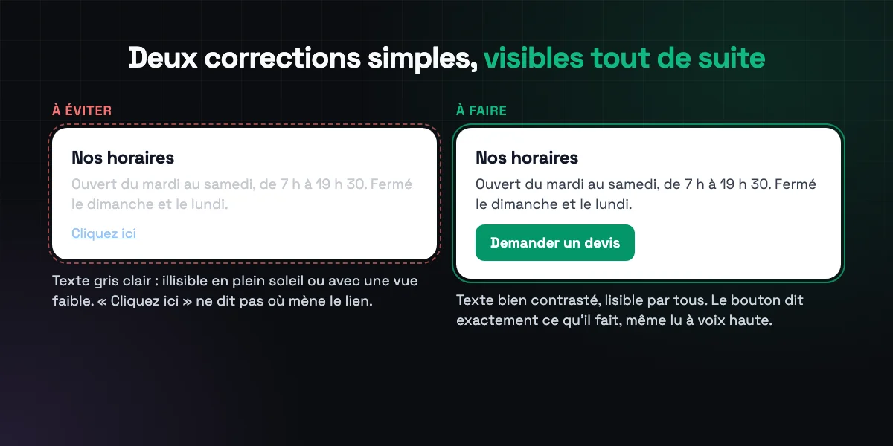

Au sommaire
1. Ce que dit la loi
La directive européenne sur l'accessibilité (souvent appelée « European Accessibility Act ») a été transposée en droit français. Depuis le 28 juin 2025, certains produits et services doivent pouvoir être utilisés par tous, y compris les personnes aveugles, malvoyantes, sourdes ou ayant du mal à utiliser une souris.
Côté internet, les services visés sont notamment :
- le commerce électronique : les sites et applications qui vendent en ligne aux particuliers ;
- les services bancaires aux particuliers ;
- les sites et applications des transports (billets, horaires, informations) ;
- les livres numériques, la téléphonie et l'accès aux médias audiovisuels.
Les règles techniques à suivre sont celles des référentiels existants : les WCAG au niveau international et le RGAA en France.
2. Qui est concerné, qui est dispensé
C'est le point le plus important pour un artisan ou un commerçant. Selon la DGCCRF, les entreprises de moins de 10 salariés dont le chiffre d'affaires ou le total de bilan est inférieur à 2 millions d'euros n'ont aucune obligation d'accessibilité pour leurs services.
- Vous êtes une petite entreprise (moins de 10 salariés et moins de 2 M€) : vous n'êtes pas obligé, même si vous vendez en ligne.
- Vous avez un site vitrine sans vente en ligne : il n'entre pas dans les services listés par la loi.
- Vous dépassez ces seuils et vendez en ligne aux particuliers : votre site est concerné.

Même au-dessus des seuils, des exemptions existent si la mise en accessibilité représente une charge disproportionnée. Elles doivent alors être justifiées.
3. Contrôles et sanctions
Les contrôles sont confiés à la DGCCRF, avec d'autres autorités selon les secteurs (Arcom, Arcep, Banque de France…). Elle peut d'abord demander une mise en conformité. Ensuite, les manquements sont punis d'amendes de 7 500 € par infraction, qui peuvent s'additionner.
Méfiez-vous des démarchages qui vous annoncent une amende imminente pour vendre un audit ou un widget : si vous êtes une petite entreprise, vous n'êtes pas concerné par cette obligation.
4. Pourquoi s'y mettre quand même
- Plus de clients : l'Union européenne compte 87 millions de personnes en situation de handicap, sans parler des personnes âgées qui voient moins bien ou utilisent mal un écran tactile.
- Un meilleur référencement : beaucoup de bonnes pratiques d'accessibilité (titres bien structurés, descriptions d'images, textes de liens clairs) aident aussi Google à comprendre votre site.
- Un site plus agréable pour tous : un texte bien contrasté se lit mieux en plein soleil, un gros bouton se clique mieux avec le pouce.
- Vous êtes prêt si votre entreprise grandit ou si vous vous mettez à vendre en ligne.
5. 7 gestes simples pour un site accessible
- Des contrastes suffisants : pas de texte gris clair sur fond blanc.
- Une description pour chaque image utile (le texte alternatif), lue à voix haute aux personnes aveugles.
- Des titres dans le bon ordre, pour qu'on puisse parcourir la page comme un sommaire.
- Des liens et boutons explicites : « Demander un devis » plutôt que « Cliquez ici ».
- Un site utilisable au clavier, sans souris, avec un repère visible sur l'élément sélectionné.
- Des formulaires avec des étiquettes claires et des messages d'erreur compréhensibles.
- Des sous-titres sur les vidéos, et pas de lecture automatique avec le son.

Un conseil : évitez les widgets « d'accessibilité en un clic ». Ils changent l'affichage, mais ne corrigent pas les vrais problèmes du site.
6. Questions fréquentes
Mon site vitrine d'artisan doit-il être accessible ?
Si vous avez moins de 10 salariés et moins de 2 millions d'euros de chiffre d'affaires ou de bilan, la loi ne vous l'impose pas. C'est le cas de la plupart des artisans et commerçants. C'est tout de même une bonne pratique.
Quelles sont les sanctions ?
La DGCCRF peut demander une mise en conformité, puis infliger des amendes de 7 500 € par infraction, cumulables.
Un widget d'accessibilité suffit-il ?
Non. L'accessibilité se règle dans le code et dans les contenus du site, pas avec un bouton ajouté par-dessus.
Source : fiche pratique de la DGCCRF sur la directive « Accessibilité ». Cet article donne des informations générales et ne remplace pas un conseil juridique.
Envie de faire le point sur votre site ? Notre audit gratuit analyse votre référencement, votre vitesse et le parcours de vos visiteurs, et vous indique quoi corriger en priorité.
Demander l'audit gratuit Maquette gratuite